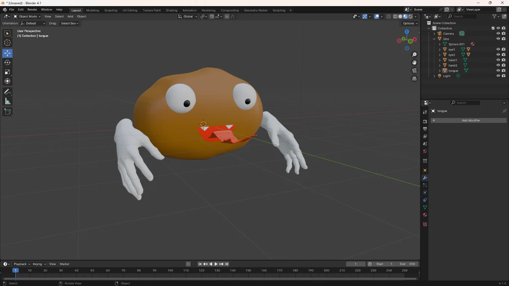

芋からの脱出
作品紹介
UE5の授業で学んだことをベースに自主学習を進めながら開発しているゲームです。
ホラーゲームで、芋のキャラクターから逃げながら脱出を目指します。
工夫点・技術的特徴
キャラクターのモデルはBlenderによって作成しました。(ただし手の素材はフリー素材を改変したものです。)

明るさ、色味、霧の調整などで不気味な雰囲気になるように調整をしました。
マップの作成や敵キャラクターの動きなどにも力を入れました。
UEを学び始めて最初の作品なのでとても苦労しました。